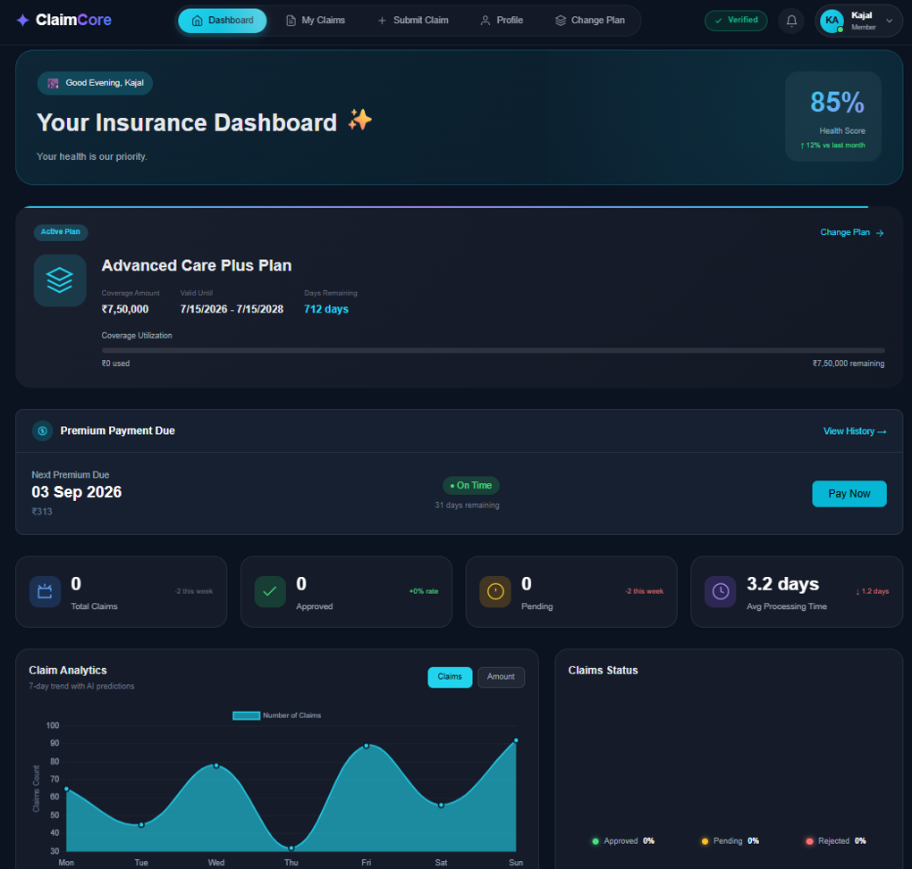

Designed and developed during my Software Developer Internship at Evalueserve Innovation & Technology Center (ITC). ClaimCore streamlines the complete insurance lifecycle including policy management, KYC verification, premium payments, claims, and administrative workflows.

Traditional insurance systems rely on paperwork,
manual approvals, and disconnected workflows,
leading to delays and poor customer experience.
ClaimCore was designed to digitize the
complete insurance lifecycle—from user registration
and KYC verification to premium payments,
claim processing, and administrator approvals.
Create account securely
Upload documents
Admin approval
Premium payment
Submit insurance claim
Track claim status
ClaimCore simplifies every stage of the insurance lifecycle with secure authentication, KYC verification, premium payments, intelligent claim tracking, and powerful admin tools.
Secure authentication with role-based access control for customers and administrators.
Customers upload documents while administrators review and approve them.
Integrated Razorpay payment gateway for secure premium transactions.
Submit claims, upload evidence, and monitor claim status in real time.
Visual dashboards with policy insights, claim statistics, and payment summaries.
Manage users, verify KYC requests, and process insurance claims efficiently.
A walkthrough of the complete insurance platform showcasing authentication, dashboard analytics, claims management, KYC verification, premium payments and administrative workflows.
Users instantly see policy details, premium reminders, claim analytics, approval status, and health score from a single dashboard.
Customers securely upload identity documents. Administrators review submitted documents, verify customer information, and approve or reject verification requests through an organized workflow.
Users can pay policy premiums through Razorpay with complete transaction history, receipts, payment reminders, and secure payment processing.
Customers create claims, upload supporting evidence, track processing status, and receive approval notifications without paperwork.
Administrators manage users, verify KYC requests, approve claims, monitor policies, and oversee the complete insurance workflow.
ClaimCore follows a layered architecture that separates presentation, business logic, authentication, database access, and third-party services for scalability and maintainability.
ClaimCore was built using a modern enterprise technology stack with a clear separation of frontend, backend, security, database and payment services.